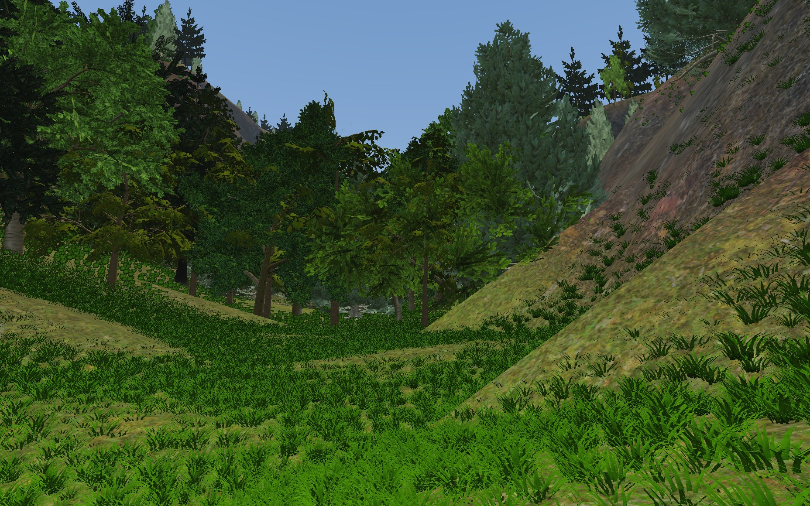
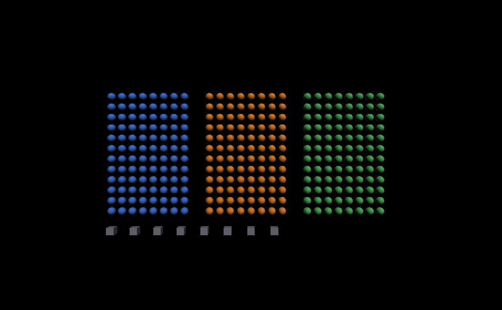

Many 3D scenes draw the same shape over and over: a hundred columns in a temple, a thousand atoms in a molecule, a field of identical bolts, trees or crates. Drawn naively, each copy costs a separate draw call, and the CPU spends more time telling the GPU to draw than the GPU spends drawing. Instancing is the OpenGL feature that fixes this: you hand the GPU the shape once and say “now draw it 1000 times, here is the little bit of data that differs for each copy.” This page explains how OpenGLContext applies instancing automatically, what it can and cannot batch, and the switches that control it. The indented technical notes point to the code that implements each piece.

To draw an object, your program sends the GPU a stream of commands: bind this geometry, set this transform, set this colour, now draw. That handshake has a fixed cost paid per object, on the CPU, whether the object fills the screen or is a single pixel. Draw ten objects and it is nothing. Draw ten thousand and the CPU is still setting up object number 9,999 while the GPU sits idle, waiting for work. This is the draw-call bottleneck, and it is the wall large scenes hit first.
In OpenGLContext the per-object cost lives in
Shape.Render and the surrounding loop (matrix upload, material
upload, id assignment, the draw), on the order of tens of microseconds per object.
A scene with tens of thousands of objects can spend a whole frame on setup before a
single triangle is shaded. Instancing collapses that loop into one call.
A normal draw call is glDrawElements: “draw this mesh once.”
The instanced version is glDrawElementsInstanced: “draw this mesh
N times.” One command, N copies. The GPU runs the vertex shader for
every vertex of every copy, but your CPU issued a single call.
For that to be useful, each copy needs to end up somewhere different, with maybe
a different colour. So alongside the shared mesh you give the GPU a second, small
array — one entry per instance — holding the data that differs. OpenGL
calls this a per-instance vertex attribute, and you mark it with
glVertexAttribDivisor(location, 1). The divisor is the whole
trick:
So the shape's vertices are shared by all copies, while the per-instance array supplies each copy's own transform, id and material.
OpenGLContext packs three things per instance, at fixed
attribute locations that the shaders (pbr.vert,
vrml97_lighting.vert, shadow_depth.vert) agree on:
locations 5–8 a mat4 model-view matrix (a matrix
occupies four consecutive vec4 locations), location 9 a
uint object id for picking, location 10 a
uint material index. The shaders multiply by the per-instance matrix
instead of a uniform, and are gated by an instancingEnabled uniform
so the ordinary non-instanced path is byte-for-byte unchanged. See
passes/instancing.py (pack_instance_buffer,
draw_instanced_mesh).
Instancing only helps when copies genuinely share geometry, so the first job is to decide which shapes may ride in the same instanced draw. OpenGLContext does this every frame by computing an instance key for each shape and bucketing shapes with equal keys. A bucket with enough members becomes one instanced draw; everything else falls back to the ordinary per-shape path, unchanged.
Two shapes share a key — and therefore one draw — when they agree on:
USE/DEF reference, or a glTF mesh reused by many
nodes), or two different nodes that happen to hold identical
vertex data (a Sphere of the same radius authored a hundred times). The latter is
called content collapse — see below.The grouping is fed from two directions that converge on the same batcher:
Transforms, or a glTF
file using the EXT_mesh_gpu_instancing extension (per-instance
translate/rotate/scale on a node). These arrive already knowing they are
instances.
python tests/instancing_batched.py
— 296 shapes drawn in 4 calls. Each field is built a different way
so the grouping rules can be told apart by eye: the blue field shares one
Sphere node across all 96 shapes, the orange field gives each
shape its own equal Sphere, and the green field shares a node
again but under a second material. The boxes are a fourth group because
the geometry differs. Press i to switch batching off and
watch the draw count jump to 296.The counts print whenever they change, so the collapse is legible without reading the picture:
$ python tests/instancing_batched.py instancing ON 296 of 296 shapes -> 4 draws (296 instances in 4 groups) instancing OFF 296 of 296 shapes -> 296 draws (0 instances in 0 groups)
The first number is what survived frustum culling, which runs
before batching. Running the same scene with
OPENGLCONTEXT_INSTANCE_COLLAPSE=off takes 106 calls: the two
shared-node fields still batch into 2, and the 96 separate spheres and 8
separate boxes each cost a draw of their own.
Nothing in that demo asks to be instanced. It builds ordinary
Shape nodes and reads the counts back off the context
afterwards, which is all an application has to do:
from OpenGLContext.scenegraph.basenodes import (
Appearance, Material, Shape, Sphere, Transform,
)
ball = Sphere(radius=0.32) # one node, referenced many times
blue = Material(diffuseColor=(0.25, 0.45, 0.85))
scene = Transform(children=[
Transform(translation=(x, y, 0.0),
children=[Shape(geometry=ball,
appearance=Appearance(material=blue))])
for x in range(12) for y in range(8)
])
# After a frame has been drawn, on the context:
stats = context.renderStats
print(stats.shapes, stats.draws, stats.instances, stats.instanceGroups)
renderStats is a
passes.renderstats.RenderStats holding the counts for the frame just drawn, and the developer overlay
(HUD & developer overlay) shows the same numbers
live. Instancing is also a field on the
ContextDefinition, so a settings screen can offer it and the
demo's i key is just
context.contextDefinition.instancing = False.
The draw is one call either way. What is not the same either way is the work before it: a thousand copies modelled as a thousand nodes is a thousand world matrices, a thousand bounding volumes, a thousand frustum tests, a thousand batch keys and a thousand shadow-caster records — every frame, to reach a draw the file already told you about. On a streamed world that per-object cost, not the draw, is the frame rate.
So a set that arrives declared stays one object:
InstancedShape is a Shape plus
placements, an (N,4,4) array of local matrices. The
pass does its per-object work once for the set and expands the placements
only at the draw. A glTF EXT_mesh_gpu_instancing node loads as
one of these; so does anything you build yourself:
from OpenGLContext.scenegraph.instancedshape import (
InstancedShape, placement_matrices,
)
forest = InstancedShape(
geometry=tree_mesh,
appearance=bark,
placements=placement_matrices(translations=positions,
rotations=yaws, scales=sizes),
)
A placement is the matrix a Transform around the shape would
have contributed, in the row-vector convention the rest of the scenegraph
uses. Sets of the same geometry batch together, so a hundred tiles
of one forest are still one draw. The set is culled, picked and depth-sorted
as a whole: it is one object.
The node is
scenegraph/instancedshape.py. Anything that walks a scenegraph
for geometry has to expand the placements to see what is really there
— physics/gltf_world.py's collision extraction does, so a
car cannot drive through a tree it can see.
A loaded model is usually not one shape. A rocket is a body, four fins, a nozzle and a warhead, each under its own transform, and placing it by hand two hundred times gives the pass two hundred copies of every one of those parts to gather and cull each frame.
InstancedModel is that model as one
InstancedShape per part. It flattens the transforms above each
shape away once, and place() takes an (N,4,4)
array of copy matrices and composes each part's own matrix with them:
from OpenGLContext.scenegraph.instancedshape import (
InstancedModel, placement_matrices,
)
rockets = InstancedModel(model=art.load('weapons/rocket.glb'))
rockets.place(placement_matrices(translations=positions,
rotations=headings, scales=sizes))
What the pass gathers is then the number of parts, whatever the
number of copies — an eleven-part model placed two hundred times is
eleven objects, not two thousand two hundred. Placing nothing draws nothing,
which is what an empty set has to look like, so a pool sized for the worst
case costs nothing while it is idle. model_parts() is the
flattening on its own, for a caller that wants the
(shape, matrix) pairs without the node.
A copy is one matrix rather than a subtree, so moving the set is an array write rather than a field written on a transform per part per copy — which keeps the scenegraph's change notifications out of the per-frame path as well.
Node identity (“is this literally the same object in memory?”) catches
the explicit cases cheaply. To catch the opportunistic ones, a geometry can supply a
content key — a short signature of its shape — so two distinct
nodes with the same signature land in one bucket. A Sphere's signature is just
('Sphere', radius, tessellation); a general mesh hashes its
vertex arrays.
The keys live in passes/instancing.py:
geometry_content_key (PBR pass, keys on content + texture set + pass
signature, lets material factors vary) and
geometry_content_instance_key (VRML97 lit pass, which binds one
material per group so it also splits on material identity). A geometry opts in by
implementing instanceContentKey(); without one, a mesh's vertex arrays
are hashed once and cached on the node (_geometry_content_id). Grouping
itself is build_instance_groups; the minimum bucket size is
OPENGLCONTEXT_INSTANCE_MIN (below it, per-shape drawing is cheaper than
instancing's fixed setup). Opportunistic collapse can be turned off with
OPENGLCONTEXT_INSTANCE_COLLAPSE=0, which falls back to node-identity
grouping only.
A field of “same sphere, different colour” should still be one draw. It
is: the group's distinct materials are packed into a small array on the GPU, and each
instance carries an index (that location-10 attribute) selecting its own
entry. The shader reads materials[index]. So colour, metalness,
roughness and the other numeric factors vary per instance for free.
The array is a std140 uniform block
(MaterialBlock in pbr.frag), sized to the guaranteed
16 KB UBO minimum — 90 materials — though desktop drivers report much
more (~370 at 64 KB). A group with more distinct materials than fit is split into
a few instanced draws (“chunking”), still a huge win over per-shape. Only
the PBR pass has the material array; the VRML97 lit pass binds one material per group,
so it splits colour variants into separate groups instead.
OpenGLContext lets you click objects to select them. It does this by drawing each object's id into a hidden buffer and reading back the id under the cursor. Instancing must not break that — you should be able to click one atom out of a thousand in a single instanced draw. It works because the id is just another per-instance value (location 9): every copy writes its own stable id, so the hidden buffer ends up with a thousand distinct ids exactly as if they had been drawn separately.
The exception is a declared placement set, which is one node: its placements share its id, so a click names the set rather than the copy. Where each copy has to answer for itself, place them as separate shapes and let the opportunistic path batch them.
Ids come from _objectIdFor(path), stable per scene
path across frames. A shape marked pickable=False is handled by
masking the id attachment (glColorMaski) so it writes no id and
picks read through it — the water-surface / gizmo case. Masking is
per-draw state, so a mix of pickable and non-pickable instances is split into two
draws, the non-pickable one drawn with the id attachment masked.
Figures of one build hold the same rest-pose vertices — the pose lives in the joint palette, not in the buffers — so a crowd of them batches on content like any other repeated mesh. Each instance carries the place its own joints start in that palette, so one draw covers a hundred bodies in a hundred different poses. See rigged characters.
A figure whose skinning runs on the processor instead does not batch: its buffers hold its posed vertices, so no two of them are the same geometry and there is nothing to collapse.
A geometry becomes instanceable by exposing its mesh in the shared attribute layout
(an instanceGPU(mode) method); the passes pick it up automatically. Today
that covers:
.wrl and glTF content. An
IndexedFaceSet reuses the exact triangle data it already tessellates for normal
drawing, so an instanced one looks identical to a per-shape one.EXT_mesh_gpu_instancing and glTF shared meshes
— recognised by the loader and collapsed automatically.Some geometry is deliberately left out, because instancing it would cost more than it saves:
The first time a group is drawn, OpenGLContext builds the GPU objects it needs — the VAO that wires up the mesh and per-instance arrays, and the per-instance buffer — then caches them on the mesh. Each subsequent frame re-uploads only the instance data into the existing buffer; the material array's buffer is reused the same way. There is no per-frame create/destroy of GPU objects.
See _build_instance_vao /
draw_instanced_mesh (the VAO + instance vbo.VBO live on the
mesh's _MeshGPU, reclaimed with it) and _bind_material_array
(one persistent UBO on the pass, orphaned and re-uploaded per group). The instance
matrices are eye-space (they fold in the camera), so the buffer is re-uploaded each
frame even for a static scene; keeping it static would mean uploading model-space
matrices and doing the view transform in the shader.
tests/unit/test_instanced_caching_gl.py counts GPU-object creations per frame
and requires zero in steady state.
An object outside the camera's view (the frustum) should not be drawn at all. OpenGLContext already tests every object against the frustum before it forms instanced groups, so off-screen copies never reach the instanced draw — they cost no vertex-shader work. (If you point the camera so half a field is off-screen, the instanced draw contains only the visible half.)
The remaining cost is the test itself: checking a very large field one object at a time, every frame, on the CPU. Cluster culling makes that cheaper. It sorts the instances by spatial locality (a Morton, or Z-order, code from each instance's position), groups them into small contiguous clusters each with a combined bounding box, and tests the box. A cluster wholly outside the view is thrown away in one test instead of one-test-per-member. Clusters that straddle the edge fall back to the exact per-object test, so the result is identical, just reached with less work.
Implemented as pure, testable functions in
passes/instancing.py (morton_order, build_clusters,
cluster_cull) and wired into frustumVisibilityFilter. The
cluster box is padded by the largest member's world radius so it can never reject a
cluster that has a visible member — correctness is provably identical to the
per-object filter (tests/unit/test_instance_cluster_cull_gl.py checks the drawn
set matches exactly). Because per-object culling already gives correctness, this is a
pure cost optimisation and is opt-in:
OPENGLCONTEXT_INSTANCE_CLUSTER_CULL=1, active only above 256 objects.
Instancing is on by default and needs no code changes to benefit from — load a scene with repeated geometry and it batches. These environment variables let you tune or disable it, mostly for debugging and benchmarking:
| Variable | Default | Effect |
|---|---|---|
OPENGLCONTEXT_INSTANCING | 1 (on) |
Master switch. Set 0 to draw every shape per-object (compare
correctness / measure the speed-up). |
OPENGLCONTEXT_INSTANCE_COLLAPSE | 1 (on) |
Opportunistic content collapse of distinct-but-identical meshes. Set
0 to batch only explicitly-shared geometry (node identity). |
OPENGLCONTEXT_INSTANCE_MIN | 4 |
Minimum copies before a bucket is worth an instanced draw; smaller buckets draw per-shape (instancing has a fixed per-batch setup cost). |
OPENGLCONTEXT_INSTANCE_CLUSTER_CULL | off | Turn on cluster culling to lower the per-frame CPU cost of frustum-testing very large static fields. Correctness is unchanged; it only saves work. |
InstancedShape is culled as a
whole (its bounding box covers every placement), picks as a whole (one id
for the set), and sorts by its own origin. Where each copy needs its own
answer to one of those — a click that must name the individual tree
— place them as separate shapes and let the opportunistic path batch
them.The engine is OpenGLContext/passes/instancing.py
(grouping keys, build_instance_groups, capability detection, cluster
culling, and the draw_instanced_mesh draw path). Each pass wires it in via
instancing_enabled / _instanceable / _instanceKey
/ _drawInstanceGroup: the PBR pass in passes/pbrpass.py (with
the per-instance material array), the VRML97 lit pass in passes/flatcore.py,
and the shadow depth pass in passes/shadowmixin.py (so an instanced scene
also casts shadows in one draw per light instead of re-drawing every caster). Geometry
nodes opt in with instanceGPU(mode) + instanceContentKey()
(see scenegraph/box.py, quadrics.py, pbrmesh.py,
indexedfaceset.py). The design record, including the deferred
hardware-accelerated paths (SSBO material arrays, multi-draw-indirect, bindless
textures), is in plans/INSTANCED-GEOMETRY.md.